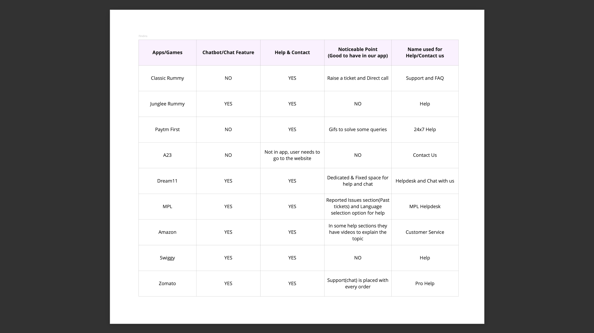
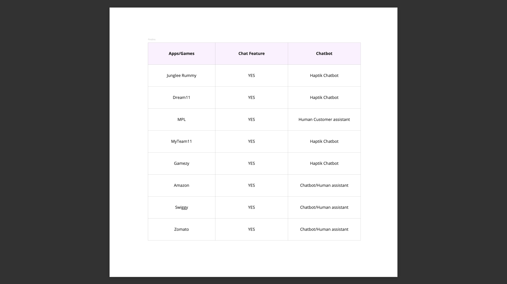
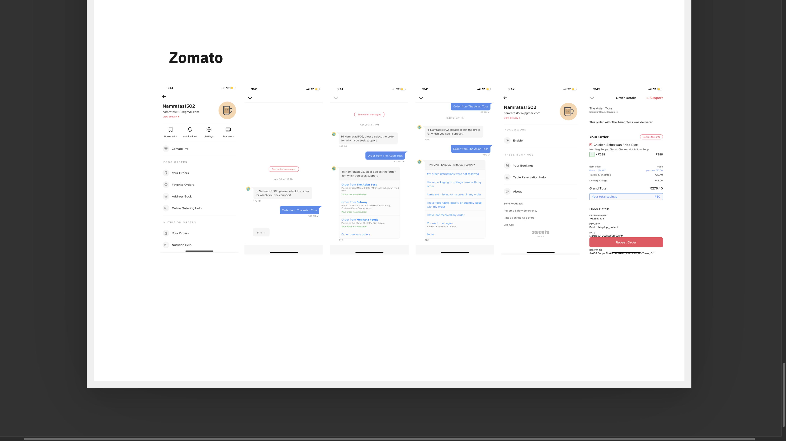
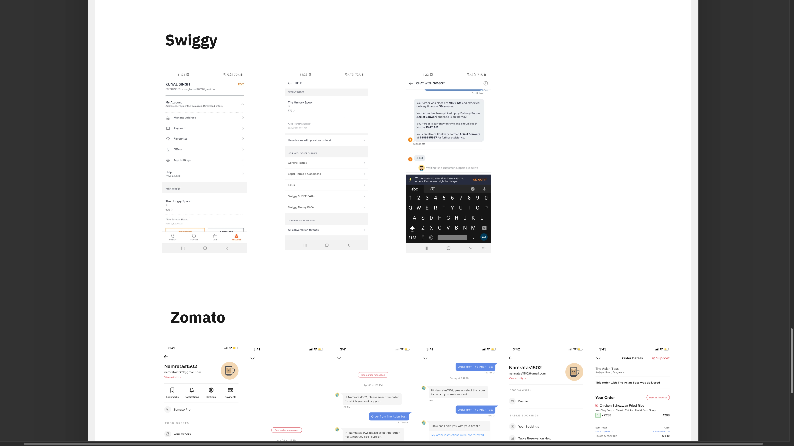
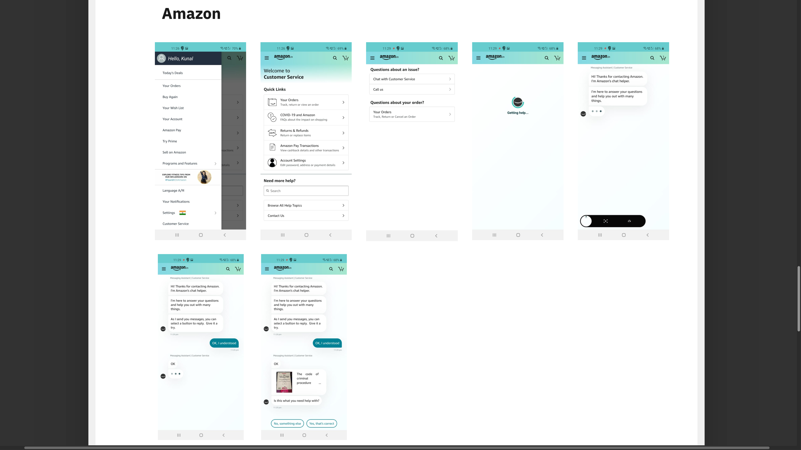

The Process
Research to ready-for-dev
After seeing the current flow and pages, I mapped where help and support should be added, conducted competitor research, and iterated through design drafts before final stakeholder approval.
Map the Existing App Flow
I mapped the existing app flow to identify where Help & Support touchpoints should be added — creating a proposed flow showing exactly where chatbot entry points would live.

Flow where help and support can be added
Competitor Analysis
After flow creation I did market and competitor analysis to understand how other apps are solving customer support. First I checked how many apps are using chatbots — starting with well-known examples like Amazon, Zomato, and Swiggy, then looking closely at direct competitors Junglee Rummy and Dream11.

Apps using chatbot support — landscape research

Types of chatbots used by different companies

Junglee Rummy

Dream11

Zomato

Swiggy

Amazon
Design Drafts
Once done with all research, I started working on first design drafts covering all use cases and scenarios — five help home options, two chat initiation options, and three CTA/page style variations.
Stakeholder Review & Tech Handoff
After months of research, ideation, and design iterations, the final work was shared with stakeholders and approved for handoff to the tech team.